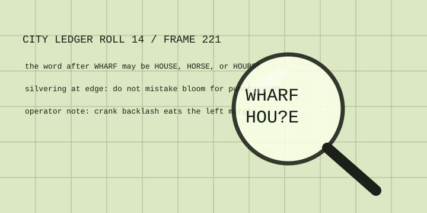

← microfiche room
Reader Calibration Card
A practical page for deciding whether the unreadable mark is a word, a scratch, or the machine enjoying itself.
ROLL: 14
FRAME: 221
LENS: 24×
FRAME: 221
LENS: 24×

Four checks before transcription
- Turn focus past sharpness, then back. Dust often moves differently than type.
- Jiggle the carrier left-right. Crank backlash eats the left margin first.
- Compare repeated letters in the same column: an S should fail consistently.
- Mark uncertain characters with a question mark, not a heroic guess.
Likely word
WHARF HOUSE
Matches river article vocabulary and the surviving ascender height.
Rejected reading
WHARF HORSE
Possible letter shapes, poor context. There is no horse in the market column, sadly.
Do not clean fiche with window cleaner. If the carrier glass is dirty, clean the glass; if the film is dirty, stop and note it.